Why MSA/CNA ?
Cloud Optimization
& Cost Efficiency
Containerized applications can run in various server environments, including cloud services, providing a wider range for optimal choices to meet various requirements (including cost).
Using containers and cloud services efficiently can be cheaper than traditional setups.
Improved Operations
The integrated monitoring system facilitates early detection of the problem and root identification of the root cause of problems easier.
Automated CI/CD without manual process reduces operating burden and costs.
Efficient Scalability
The container management function allows the system to be expanded efficiently when needed, and the automatic failure recovery function enables stable service provision even in the event of traffic surges or failures.
Faster and Easier
Development Process
Containers and microservices let you work on new features separately. This makes it easier to create, test, and release new ideas quickly.
CI/CD pipelines automate code verification and build processes, streamlining error detection and reducing trial and error. This leads to more predictable project timelines.
